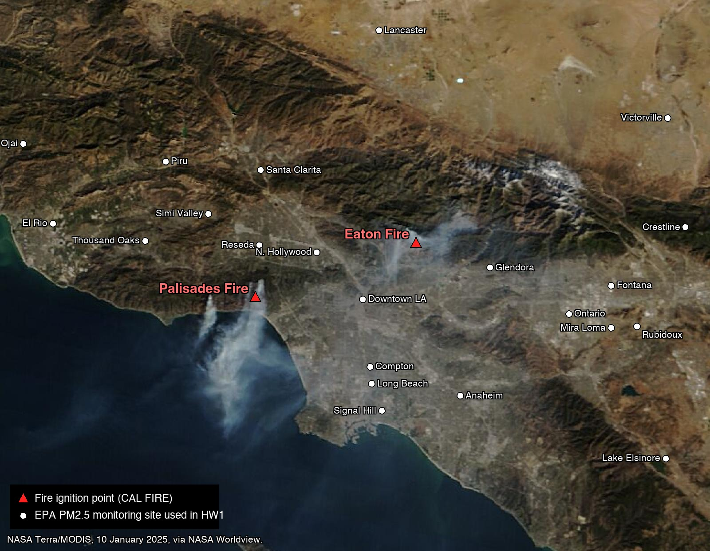

HW1 · How bad was the air?
Out Fri Sep 11 · due Fri Sep 18, 11:59 pm

No AI on this one. See the rule near the bottom. It is the only kind of exception the course makes, and it is made on purpose.
What happened
On the morning of 7 January 2025, a wildfire started in the hills above Pacific Palisades, on the coast of Los Angeles, California. That evening a second fire started in Eaton Canyon, above the city of Altadena, 40 km to the east. Both were driven by Santa Ana winds, a dry wind that blows from the desert toward the ocean, gusting that night past 100 km/h. The two fires burned for over three weeks, destroyed thousands of homes, and became two of the most destructive wildfires in California’s history.
- Palisades Fire: 23,448 acres, 7 to 31 January.
- Eaton Fire: 14,021 acres, 7 to 31 January.
Los Angeles sits in a basin ringed by mountains, and the basin is dense with air quality monitors. The US Environmental Protection Agency (EPA) publishes what every one of them recorded, every day. This assignment asks a plain question of that record: how bad did the air get, where, and for how long?
What you produce
One figure, rebuilt from the raw data so that it matches the target below as closely as you can.

Panel A is the whole network on each day: the average across every monitor reporting, with the 10th and 90th percentile of monitors.
Panel B is every monitor on every day, coloured by EPA’s Air Quality Index category, with the monitors nearest the Eaton Fire at the top and their distance from it down the right edge.
Study the target before you write a line. Two things it shows are worth noticing now: the air was worse in early December than during the fire, and the fire’s effect stops about 60 km out.
What you get
The data. One file, exactly as EPA’s Download Daily Data tool ships it. Nothing has been cleaned or reformatted.
https://arielortizbobea.github.io/assets/data/epa_pm25_la_fires_2024_2025.csv
Daily PM2.5 for every monitor within 150 km of the Eaton Fire, 1 December 2024 to 28 February 2025. 3,995 rows, 1 MB. PM2.5 is fine particulate matter, in micrograms per cubic metre (µg/m³); EPA’s 24-hour health standard is 35. The file also carries EPA’s own Daily AQI Value, the number behind the colour categories you see on the news.
The fire. The Eaton Fire’s ignition point, from CAL FIRE’s incident record:
34.2035 °N, −118.0692 °W
You will measure every monitor’s distance from this point.
The starter. Your private repo in the course GitHub organization contains hw1.Rproj, an empty code/ folder, and this page. Click the green Code button, Download ZIP, unzip it somewhere you keep coursework, and open hw1.Rproj.
The rules the figure follows
To rebuild the figure you need to know exactly what it encodes. None of this is hidden. The pipeline is the assignment; the choices were never the secret.
- Window: 1 December 2024 to 28 February 2025, inclusive.
- A monitor is an instrument, not a place. A site is a place. Several sites run more than one instrument, each with its own
POCnumber and parameter code. Every instrument gets its own row in panel B. The keySite ID+POC+AQS Parameter Codeis unique on any given day, and your script should check that it is. - Keep monitors that reported at least 60 of the 90 days. Some instruments sample one day in three or one in six; their rows would be mostly gaps.
- Distance from the fire, in km, from each row’s
Site LatitudeandSite Longitude. A degree of latitude is about 111 km anywhere on Earth. A degree of longitude is shorter, and shorter the further you are from the equator; at Los Angeles it is about 92 km. Convert each difference into km, then use Pythagoras. - Panel B rows are sorted by that distance, nearest at the top. Where a site runs more than one instrument, append the POC in brackets so the rows stay distinguishable. One site in the file ships with a blank name; label it by its ID.
- Panel A: for each day, the mean across the monitors that reported, and the 10th and 90th percentile of those same readings.
- Colour is EPA’s Air Quality Index: six categories, six colours, from the file’s own
Daily AQI Value. Days a monitor did not report are white. The key is drawn withlegend()and lists all six categories, whether or not they occur. - One red line marks 7 January, running through both panels.
- Output:
figures/hw1_target.png, 183 × 247 mm, 300 dpi.
How to organise it
Two scripts and a master file, in code/:
| file | job |
|---|---|
code/1_get_clean_data.R |
download the file, keep the window, build one row per monitor, compute distance, sort, save one clean object to data_clean/ |
code/2_plot_figure.R |
read that object, compute the daily summaries, draw the figure to figures/ |
code/run_everything.R |
source() the two, in order |
Keep raw data in data/ and anything you computed in data_clean/. Never mix them. Every path is relative to the project root, because you opened hw1.Rproj first: "data/...", never "/Users/you/...".
Each script opens with a parameters block: the file names, the dates, the fire’s coordinates, the km-per-degree constants, the six colours. Nothing that means something is typed twice.
Cheat sheet
Everything you need was covered in sessions 2 to 6. Nothing else is required, and nothing else is expected.
| task | functions | session |
|---|---|---|
| get the file | download.file(), file.exists(), dir.create() |
3, 6 |
read it, protecting Site ID |
read.csv() with colClasses |
3 |
| dates | as.Date() with format =, seq() by day, format() |
2, 3 |
| rename columns | names() |
1 |
| subset and sort | logical indexing, order(), %in% |
2, 4 |
| build the key, check it | paste(), duplicated(), anyDuplicated(), stopifnot() |
3, 6 |
| distance | arithmetic, sqrt() |
5 |
| monitor × day grid | factor() with levels =, tapply() |
2, 3 |
| row and column summaries | apply(), is.na(), sum(), mean() |
2, 3 |
| percentiles | sort() and an index |
2 |
| hand the clean object over | saveRDS(), readRDS() |
3 |
| a small function | function() |
6 |
| two panels, one file | png(), layout(), par(), dev.off() |
4, 5 |
| the lines | plot(), lines(), axis(), box(), mtext(), legend() |
4 |
| the heat map | findInterval(), image(), rect(), t() |
3, 5 |
| drawing outside the plot | par(xpd) |
5 |
| run it clean | Restart R, source() |
6 |
Tips
The colours. EPA publishes the exact colours of the AQI scale in its AQI technical assistance document, Table 2, as RGB triplets. In hex they are:
| category | AQI | colour |
|---|---|---|
| Good | 0 to 50 | #00E400 |
| Moderate | 51 to 100 | #FFFF00 |
| Unhealthy for sensitive groups | 101 to 150 | #FF7E00 |
| Unhealthy | 151 to 200 | #FF0000 |
| Very unhealthy | 201 to 300 | #8F3F97 |
| Hazardous | 301 and above | #7E0023 |
R takes a hex code anywhere it takes a colour name.
read.csv() damages a column. Site ID is a label that happens to be spelled with digits, and read.csv() reads it as a number, so 060371103 becomes 60371103 with no warning. colClasses protects it at read time. Note that colClasses uses R’s name for the column, Site.ID, not the file’s header.
image() draws row 1 at the bottom. If you want the nearest monitor at the top, the matrix goes in upside down. rev() does it.
Percentiles without quantile(). You have not met quantile(). You do not need it: sort() the day’s readings, which also drops the NAs, and pick the value by position.
Grey cells hide the pattern. Paint the panel white with rect() before image() draws over it, so days with no reading show as white rather than as the background colour.
One site has no name. Look at your row labels. If one is blank, find out why, and give it a label that says what it is.
Restart and source before you submit. A script that only works because of what is already in your environment is the most common way to lose points here. Session > Restart R, then source("code/run_everything.R"). It must run top to bottom with no errors.
What to submit
Four things, by browser upload to your repo (drag onto the repo page, commit; no git client needed this week):
code/1_get_clean_data.Rcode/2_plot_figure.Rcode/run_everything.Rfigures/hw1_target.png
Do not upload data/ or data_clean/. The grader runs your scripts from a fresh clone and they download and rebuild everything.
No AI on this one
The syllabus permits AI tools on homework by default. This assignment is the exception. Every function you need is on the session pages linked above. Hand this to a chatbot and it will produce the figure in a minute, and you will have learned nothing that the rest of the semester depends on. From HW4 onward you will be asked to verify code an AI wrote; you cannot verify in a language you do not read.
Ask a classmate. Ask in office hours. Re-run the session scripts until the pieces stick. Then write it yourself.
You do not need to write a disclosure block for HW1, because there is nothing to disclose. The formal disclosure convention starts with HW4.
Rubric
The course rubric, as on the Homework page.
9 points. Three dimensions, three points each. The grader opens your repository in a fresh R session, runs your master script from the top, and compares what it produces with the target.
Replicability (3 points)
| 3 | The code runs start to finish, without any edits, and produces the output. Paths are relative to the project root. Nothing depends on objects left over from an earlier session. |
| 2 | The code requires one minor edit to run: a stray absolute path, a folder it expected to exist, a library() call for something base R already does. |
| 1 | The code requires several edits to run, or runs with errors, or does not produce the output. |
| 0 | The code does not run. |
Two things that cost points here every year. Absolute paths: read.csv("/Users/you/Desktop/...") works on your laptop and nowhere else; open the .Rproj and use "data/...". Session leftovers: a script that works because x is still in your environment from twenty minutes ago is not a script that works. Restart R and source it before you upload. Every time.
Similarity (3 points)
| 3 | The output is virtually identical to the target. One has to really pay attention to see any difference. |
| 2 | The output is similar but has some clear differences from the target: an element missing, the wrong ordering, a scale that is not the one specified. |
| 1 | The output is clearly different from the target. |
| 0 | No output. |
Similarity is judged on what the output encodes, not on pixel-level matching. A slightly different font size is not a difference. A row missing from a table, or a monitor missing from a panel, is.
Coding (3 points)
| 3 | The code (1) has clear and logical sections, (2) has a clearly identified parameter section that can be modified to produce slightly different versions of the output, (3) is well annotated, and (4) is concise but spacious. |
| 2 | The code has at most one of the following: (1) no clear structure, (2) parameters hard-coded within the core of the script, (3) missing key annotations, (4) too dense or too verbose. |
| 1 | The code has more than one of those. |
| 0 | There is no code, or the code cannot perform the basic steps needed to generate the output. |
“A clearly identified parameter section” means the file names, the dates, the constants and the colours live together at the top of each script, named, and are used by name below. A number that means something typed in six places is six chances to change five of them.
AI use
Permitted by default, with a disclosure block, except where an assignment says otherwise. Undisclosed AI use is misrepresentation under the syllabus and is treated as an integrity violation, not as a grading matter.
For this assignment
- The output is
figures/hw1_target.png, written bycode/run_everything.R. - Similarity means: rows in the right order with the right labels, the right colour on the right day, both panels on one x axis with the red line through both. A monitor missing from panel B is a difference.
- The parameter section should hold the file names, the dates, the fire’s coordinates, the km-per-degree constants and the six colours.
- AI: this is a no-AI assignment. If you used a chatbot or coding assistant on any part of it, say so at the top of
run_everything.R. Disclosed use will be discussed, not punished; undisclosed use is an integrity matter.